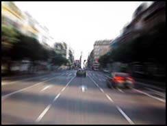

 Car ownership is a con. You may have thought that running a car is cheaper than using public transport; that owning a car is totally liberating; that you have a right to endanger other peoples’ lives, especially pedestrians’ and cyclists’; and that you have a right to damage the environment without ever questioning whether this is in fact true.
It is unlikely that you have thought about
I just thought I’d mention it.
Ben Elton puts it differently in his novel Gridlock, as does André Gorz in his 1973 essay, The Social Ideology of the Motorcar.
1998